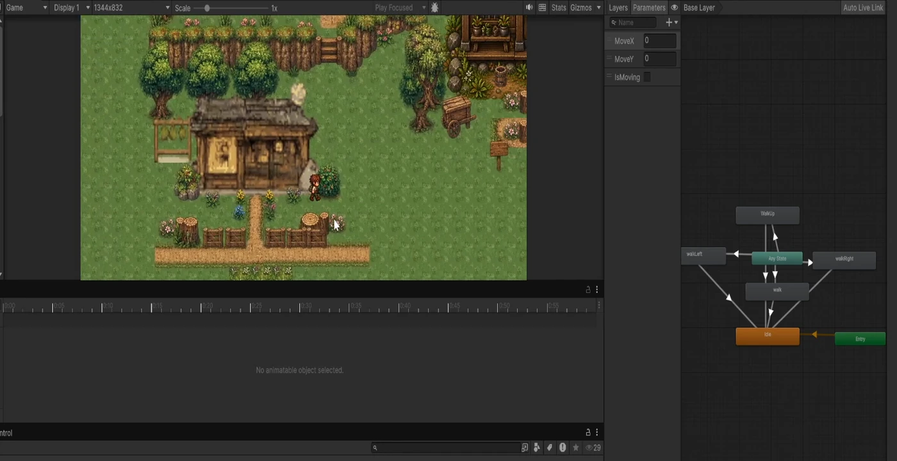
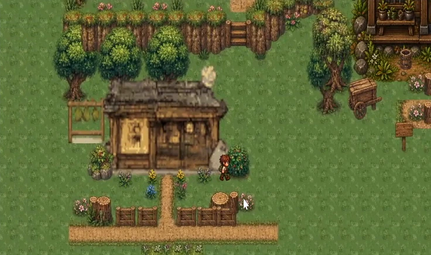

Direction should read clearly
My animation work includes checking that the character faces the correct way for each action. Earlier iteration focused on incorrect left/down facing and smoother tool motion.
Unity 6 / C# / 2D gameplay
A top-down farming and tea-shop game, with hands-on C# work on character controls and world interactions.
A movement and camera-follow demonstration from the Unity prototype. The video is cropped to the Game view. Mining, attacks and abilities are part of my scripting work, but are not demonstrated in this particular clip.
00:34 / SILENT CAPTURE01 / Contribution scope
Resource spawning and regrowth are listed as design specifications, not as completed features shown in this recording.
02 / In the footage
The character walks through a pixel-art tea-house environment, changes direction, and returns to idle. The camera follows as the player moves around the scene. The editor image below adds context: movement parameters and directional animation states are visible beside the running game.
Development capture / September 2026. Cropped for viewing and shown at normal playback speed.
03 / Development notes
My animation work includes checking that the character faces the correct way for each action. Earlier iteration focused on incorrect left/down facing and smoother tool motion.
I defined the scythe action as a harvesting sweep rather than a combat strike. That distinction guides the requested motion and the way the player action should communicate its purpose.
The recorded Animator shows MoveX, MoveY and IsMoving parameters, with directional walking states. The footage connects that setup to character movement in the scene.
04 / From the project


Keep exploring / Project 03
Next level / Let’s work together